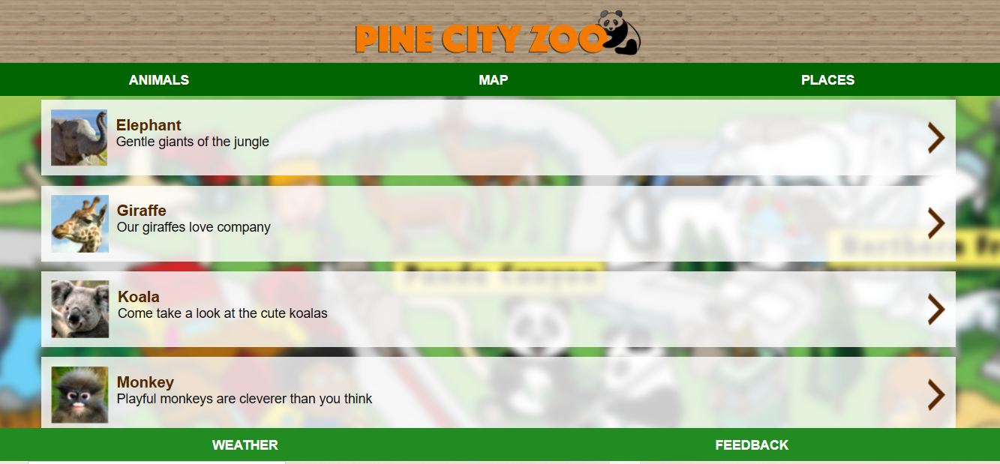
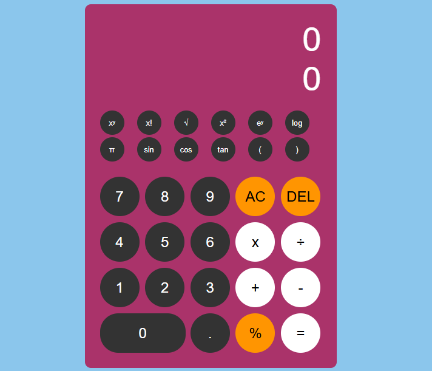
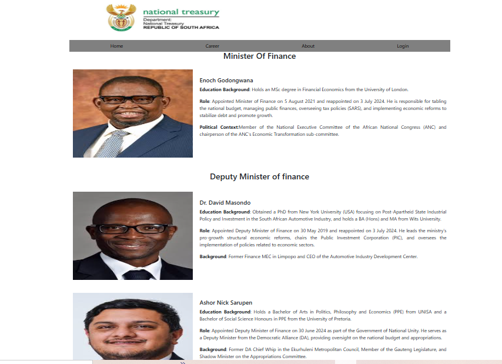

All Projects
-
HTML & CSS
Hair Day Salon
A complete salon website featuring a striking typographic HD logo, a soft pink colour palette, and a responsive three-column services Cut & Style, Beauty, and Tutorials. Includes a Salon Special promotional banner advertising up to 50% off. Built using semantic HTML and custom CSS with careful attention to visual hierarchy.
-

HTML & CSS
Pine City Zoo
An informational website for Pine City Zoo featuring an animal directory with thumbnail photos and descriptions for four animals: Elephant, Giraffe, Koala, and Monkey. The warm wood-texture header and bold orange branding give it a memorable identity. Navigation links to Animals, Map, and Places sections.
-

HTML, CSS & JavaScript
Scientific Calculator
A fully functional scientific calculator supporting standard arithmetic plus sin, cos, tan, logarithms, natural exponents, power operations, square root, factorial, pi, percentage, and parentheses. Features a vibrant pink design with a dual-line display showing current input and running result simultaneously.
-

HTML & CSS
National Treasury Department Page
An informational page modelled on South Africa's National Treasury website, profiling the Minister of Finance Enoch Godongwana and deputy ministers Dr David Masondo and Ashor Nick Sarupen, each with a photo, education background, official role, and political context. Built with semantic HTML and structured CSS.